Collection of This Station
About Us
Register
Sign In
Homemade Cookie Making
1.Finished product picture.
2. Preparation materials.
3. The material needed to weigh.
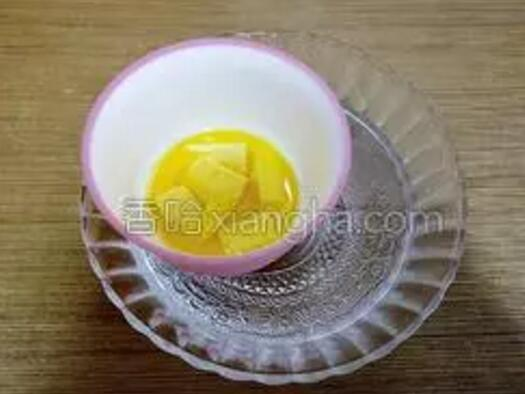 4. Butter melts in hot water.
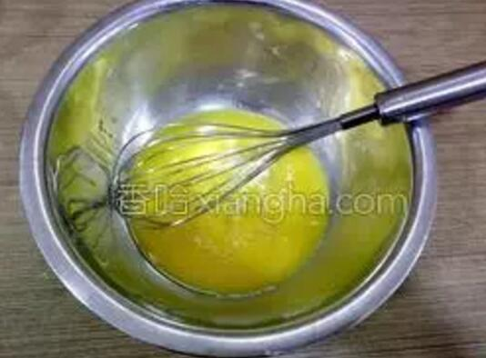 5.In large bowl, add the beaten egg and stir.
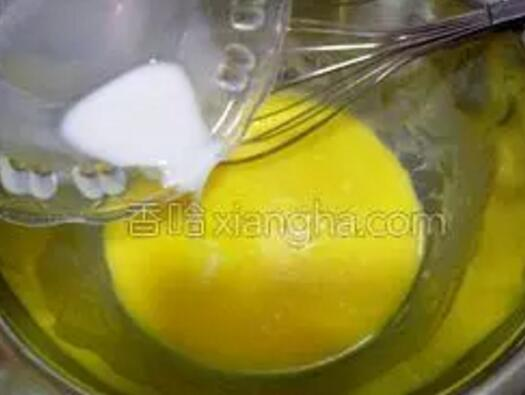 6.Add milk and mix well.
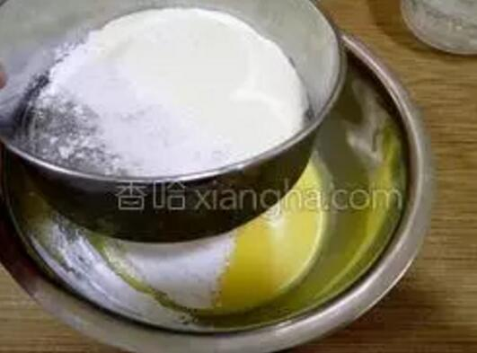 7.Sift the powdered milk and sugar, stir well.
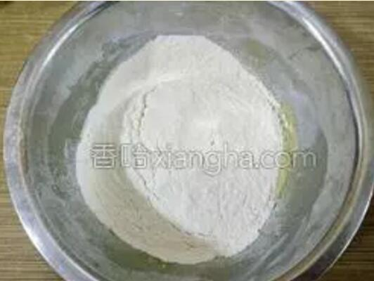 8.Screen into low powder.
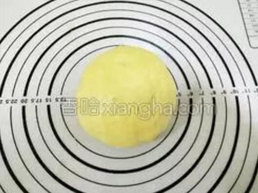 9. Knead with a smooth dry powder dough, do not overly knead in order to avoid tendons to affect the taste.
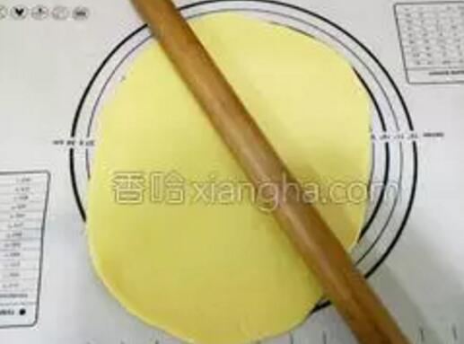 10. Roll out the 0.3cm's 0.3cm with a rolling pin.
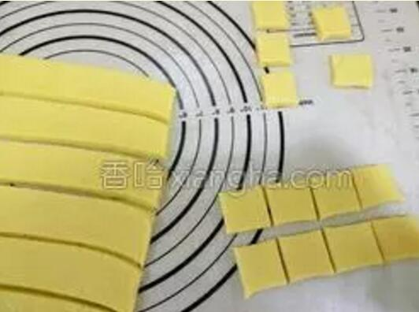 11. Cut into small pieces with a knife.
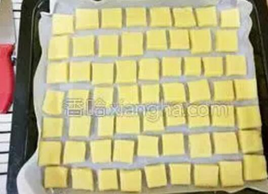 12. Pan oil paper, put into the cooked biscuit embryo.
13. Oven and lower fire 180 degrees preheat for 2 minutes, put in the baking tray, middle, 170 degree 15 minutes or so.
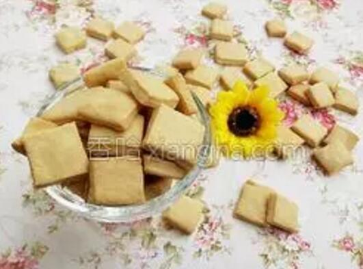 14. Take out to cool and cool to eat!
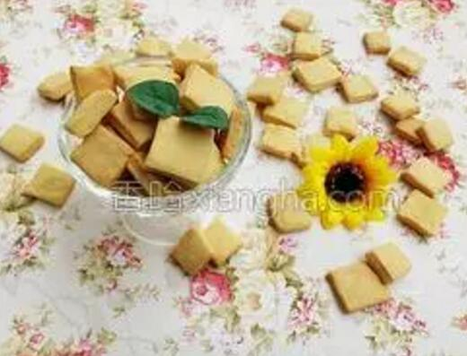 15. To be completely cooled and sealed to avoid dampness.
16. Finished product map.